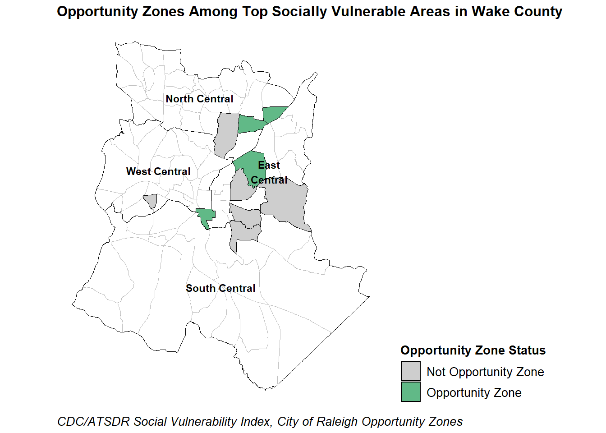

Mapping geographic disparities in social vulnerability factors in Wake County, NC.
Data Viz
Quarto
R
Mapping
Author
Lois Adler-Johnson
Published
December 24, 2024
Overview
I recently investigated a subset of Social Vulnerability Index (SVI) data from CDC/ATSDR for Wake County, NC. I’m working on building my mapping skills in R, so this project felt like a great opportunity to play around with the tigris and sf packages.
Load Libraries
Load necessary packages to use functions throughout the document.
Code
library(tidyverse) # data wranglinglibrary(janitor) # clean uplibrary(labelled) # variable labelslibrary(scales) # scaling functions for visualizationlibrary(openxlsx) # xslx readinglibrary(expss) # labelslibrary(sf) # mappinglibrary(tidycensus) # for using Census datalibrary(tigris) # download TIGER/Line shapefiles from Censuslibrary(ggmap) # spatial vizlibrary(ggthemes) # ggplot themeslibrary(GGally) # ggplot2 extensionlibrary(grateful) # package citationslibrary(knitr)
Import Data
After importing the file, I filtered the data to Wake County, NC for the purposes of this analysis. Using the tigris package, I created a shapefile tibble with Wake County’s census tracts. I also incorporated supplemental data by importing a file with the health service zones in Wake County, which allow me to further spatially aggregate the data.
Code
## SVI filewake_tbl <-read.xlsx('Data/svi-data.xlsx') %>%as_tibble() %>%# Convert to tibbleclean_names() %>%# Clean variable namesfilter(county =="Wake County") # Filter to Wake County only## Wake census tractswake_tracts <-tracts("NC", "Wake")## Health service zoneswake_service_zones <-read.xlsx('Data/health_service_zones.xlsx') %>%as_tibble() %>%# Convert to tibbleclean_names() %>%# Clean variable namesmutate(across(geoid:tract, ~as.character(.x))) # Convert variables to character
Clean Data
Steps to clean the data included: (1) converting the indicators provided to numeric, (2) creating overall variables for Wake County’s total population and housing units, (3) cleaning the location variable to only include the census tract, (4) creating a population density variable, (5) converting indicators that are counts to percents for more consistent comparison across tracts, (6) calculating a count of overcrowded housing units since it was the only indicator provided as a percent, and (7) multiplying percentages by 100 and round to 1 decimal for easier interpretation in figures to be developed.
Code
wake_tbl_clean <- wake_tbl %>%mutate(# Convert variables to numericacross(area_in_sq_mi:people_25_w_o_high_school_diploma, ~as.numeric(.x)),# Create variables for total county population and total housing unitstotal_pop =sum(population),total_housing_units =sum(housing_units),# Clean location variablelocation =str_extract(location, "^[^;]+"),# Create variable for population densitypop_density = population/area_in_sq_mi,# Update indicators to percents for comparison## Denominator = Populationperc_below_150_percent_poverty = ppl_below_150_percent_poverty/population,perc_bipoc_residents = bipoc_residents/population,perc_w_o_high_school_diploma = people_25_w_o_high_school_diploma/population,## Denominator = Householdsperc_hh_no_vehicle = households_with_no_vehicle/households,# Calculate count of overcrowded housing unitsovercrowded_housing_units = percent_of_overcrowded_housing_units*housing_units,# Multiply percentages by 100 and round to 1 decimalacross(starts_with("perc_"), ~round((.x*100), digits =1)) )
Merge Clean Data and Shapefile
I merged the cleaned dataset and the wake_tracts shapefile, joining by the “GEOID” field in the shapefile and the “fips_code” field in the cleaned data. Then, I merged the resulting file with the wake_service_zones shapefile to incorporate service zone data.
Code
wake_sf <-left_join( wake_tracts, wake_tbl_clean, by =c("GEOID"="fips_code")) %>%drop_na(starts_with("perc"))wake_service_zones_sf <-left_join( wake_sf, wake_service_zones, by =c("GEOID"="geoid")) %>%drop_na(starts_with("perc")) %>%mutate(zone_name =ifelse(zone_name=="East Central", "East\nCentral", zone_name))
Analyze Social Vulnerability Among Tracts
I wanted to identify the “most” and “least” socially vulnerable communities to visualize geographic disparities in social vulnerability factors across Wake County, so I calculated the 75th and 25th percentiles for each of the following indicators: rates of no high school diploma (age 25+), individuals below 150% FPL, overcrowded housing, households without a vehicle, and BIPOC residents.
I defined the most socially vulnerable areas as tracts in the top 25% across all 5 of the indicators: rates of no high school diploma among individuals 25 and over (>= 5.6%), individuals below 150% FPL (>= 18.6%), overcrowded housing units (>= 3%), households without a vehicle (>= 6%), and BIPOC residents (>= 52.6%). Similarly, I defined the least socially vulnerable areas as tracts in the bottom 25% across all 5 indicators: rates of no high school diploma among individuals 25 and over (<= 1.2%), individuals below 150% FPL (>= 6.5%), overcrowded housing units (0%), households without a vehicle (<= 0.9%), and BIPOC residents (<= 23.9%).
Code
# Create map captioncaption <-"Source: CDC/ATSDR Social Vulnerability Index"# Define the columns of interestcolumns_of_interest <-c("perc_below_150_percent_poverty","perc_hh_no_vehicle","percent_of_overcrowded_housing_units","perc_w_o_high_school_diploma","perc_bipoc_residents")# Most Socially Vulnerable Tracts## Calculate the 75th percentile for each indicatorupper_percentiles <- wake_tbl_clean %>%summarise(across(all_of(columns_of_interest), ~quantile(.x, 0.75, na.rm =TRUE)))## Identify tracts where all values are in the 75th percentile or greaterhighest_quartile_tracts <- wake_tbl_clean %>%filter( perc_below_150_percent_poverty >= upper_percentiles$perc_below_150_percent_poverty & perc_hh_no_vehicle >= upper_percentiles$perc_hh_no_vehicle & percent_of_overcrowded_housing_units >= upper_percentiles$percent_of_overcrowded_housing_units & perc_w_o_high_school_diploma >= upper_percentiles$perc_w_o_high_school_diploma & perc_bipoc_residents >= upper_percentiles$perc_bipoc_residents )## Merge the highest quartile tracts with the shapefilehighest_quartile_tracts_geo <- wake_tracts %>%inner_join(highest_quartile_tracts, by =c("GEOID"="fips_code"))# Least Socially Vulnerable Tracts## Calculate the 25th percentile for each indicatorbottom_percentiles <- wake_tbl_clean %>%summarise(across(all_of(columns_of_interest), ~quantile(.x, 0.25, na.rm =TRUE)))## Identify tracts where all values are in the 25th percentile or lowerlowest_quartile_tracts <- wake_tbl_clean %>%filter( perc_below_150_percent_poverty <= bottom_percentiles$perc_below_150_percent_poverty & perc_hh_no_vehicle <= bottom_percentiles$perc_hh_no_vehicle & percent_of_overcrowded_housing_units <= bottom_percentiles$percent_of_overcrowded_housing_units & perc_w_o_high_school_diploma <= bottom_percentiles$perc_w_o_high_school_diploma & perc_bipoc_residents <= bottom_percentiles$perc_bipoc_residents )## Merge the lowest quartile tracts with the shapefilelowest_quartile_tracts_geo <- wake_tracts %>%inner_join(lowest_quartile_tracts, by =c("GEOID"="fips_code"))
Visualize the Most and Least Socially Vulnerable Communities in Wake County
The most socially vulnerable areas are census tracts in the top 25% for rates of no high school diploma (age 25+), individuals below 150% FPL, overcrowded housing, households without a vehicle, and BIPOC residents. The least socially vulnerable areas are in the bottom 25% for these indicators.
Code
# Create layered map with service zones, tracts, and most/least socially vulnerable areas## Create base mapbase_map <-ggplot(data = wake_service_zones_sf) +geom_sf(aes(geometry = geometry), fill ="white", color ="gray", size =0.2) +theme_map()## Add the most and least vulnerable tracts layermap_top_tracts <- base_map +geom_sf(data = highest_quartile_tracts_geo, aes(fill ="Most Vulnerable"), color ="gray", alpha = .75) +geom_sf(data = lowest_quartile_tracts_geo, aes(fill ="Least Vulnerable"), color ="gray", alpha = .75) +scale_fill_manual(name ="Tract-Level Social Vulnerability",values =c("Least Vulnerable"="#2c7fb8", "Most Vulnerable"="#edf8b1"),labels =c("Least Vulnerable Areas", "Most Vulnerable Areas") )## Add the service zones layerzones <- wake_service_zones_sf %>%group_by(zone_name) %>%summarize(geometry =st_union(geometry))map_with_zones <- map_top_tracts +geom_sf(data = zones, fill =NA, color ="black", size =20)## Add the service zone label layerzone_centroids <- zones %>%st_centroid()map_with_labels <- map_with_zones +geom_sf_text(data = zone_centroids, aes(label = zone_name), size =3, color ="black", fontface ="bold") +labs(title ="Spatial Disparities in Social Vulnerability Factors in Wake County",caption = caption) +theme(legend.position ="right",legend.direction ="vertical",legend.title =element_text(size =10, face ="bold"),legend.text =element_text(size =10),plot.title =element_text(size =12, face ="bold"),plot.caption =element_text(size =10, face ="italic", hjust=0, vjust=1))map_with_labels
Key Insight
Wake County is divided into 8 service zones. This map shows that the most socially vulnerable communities are clustered together, concentrated in the East Central service zone and nearby tracts on the borders of the North Central, South Central, and West Central service zones. On the other hand, the least socially vulnerable communities are more distinctly spread across the county in the Northern, North Central, West, and South Central service zones. We can use this information to help inform which tracts and service zones county-level investments should go to.
Investigate Alignment Between Opportunity Zones and Socially Vulnerable Communities
Established by Congress in 2017 through the Tax Cuts & Jobs Act, Opportunity Zones are a nationwide incentive program to encourage long-term investment and economic growth in communities that have experienced historical disinvestment. The Opportunity Zones Program currently defines eligible census tracts as areas where the poverty rate is 20% or higher and/or family income is less than 80% of the area’s median income. In Raleigh, there are 10 census tracts designated as Opportunity Zones.
The shaded areas in this map are the most socially vulnerable areas, or census tracts in the top 25% for rates of no high school diploma (age 25+), individuals below 150% FPL, overcrowded housing, households without a vehicle, and BIPOC residents. Among these tracts, green areas are designated Opportunity Zones while gray areas are not.
Code
highest_quartile_tracts_geo_oz <- highest_quartile_tracts_geo %>%mutate(oz =ifelse( NAME %in%c('540.18','527.04','540.08','527.06','524.07','509', '545', '530.09', '528.03', '528.07' ), "1", "0"))# Create layered map with service zones, tracts, and most/least socially vulnerable areas## Create base mapbase_map <- wake_service_zones_sf %>%filter(zone_name %in%c('East\nCentral', 'North Central', 'West Central', 'South Central')) %>%ggplot() +geom_sf(aes(geometry = geometry), fill ="white", color ="gray", size =0.2) +theme_map()## Add the most vulnerable tracts layer with Opportunity Zones highlightedmap_oz <- base_map +geom_sf(data = highest_quartile_tracts_geo_oz, aes(fill = oz), color ="black", alpha = .75) +scale_fill_manual(name ="Opportunity Zone Status",values =c("1"="#2ca25f", "0"="gray"),labels =c("Not Opportunity Zone", "Opportunity Zone") )## Add the service zones layerzones <- wake_service_zones_sf %>%filter(zone_name %in%c('East\nCentral', 'North Central', 'West Central', 'South Central', 'East Central')) %>%group_by(zone_name) %>%summarize(geometry =st_union(geometry))map_with_zones <- map_oz +geom_sf(data = zones, fill =NA, color ="black", size =20)## Add the service zone label layerzone_centroids <- zones %>%st_centroid()map_with_labels <- map_with_zones +geom_sf_text(data = zone_centroids, aes(label = zone_name), size =3, color ="black", fontface ="bold") +labs(title ="Opportunity Zones Among Top Socially Vulnerable Areas in Wake County",caption ="CDC/ATSDR Social Vulnerability Index, City of Raleigh Opportunity Zones") +theme(legend.position ="right",legend.direction ="vertical",legend.title =element_text(size =10, face ="bold"),legend.text =element_text(size =10),plot.title =element_text(size =12, face ="bold"),plot.caption =element_text(size =10, face ="italic", hjust=0, vjust=1))map_with_labels

Key Insight
Of the 10 tracts identified as the most socially vulnerable areas, 4 are designated Opportunity Zones by the city of Raleigh. This overlap suggests the initiative is targeting areas with high social vulnerability, but could do better. Expanding Opportunity Zone tract eligibility beyond poverty and income measures could lead to improved social vulnerability among communities that have been historically marginalized. Policymakers should consider additional investment incentive programs for communities with lower rates of educational attainment and higher rates of severe housing problems, for example.
Citations
Code
# Add packages used to bibliographycite_packages(output ="table", out.dir =".") %>%kable()
Warning: 'xfun::attr()' is deprecated.
Use 'xfun::attr2()' instead.
See help("Deprecated")
Warning: 'xfun::attr()' is deprecated.
Use 'xfun::attr2()' instead.
See help("Deprecated")
Allaire, JJ, Yihui Xie, Christophe Dervieux, Jonathan McPherson, Javier Luraschi, Kevin Ushey, Aron Atkins, et al. 2023. rmarkdown: Dynamic Documents for r. https://github.com/rstudio/rmarkdown.
Pebesma, Edzer. 2018. “Simple Features for R: Standardized Support for Spatial Vector Data.”The R Journal 10 (1): 439–46. https://doi.org/10.32614/RJ-2018-009.
R Core Team. 2023. R: A Language and Environment for Statistical Computing. Vienna, Austria: R Foundation for Statistical Computing. https://www.R-project.org/.
Schloerke, Barret, Di Cook, Joseph Larmarange, Francois Briatte, Moritz Marbach, Edwin Thoen, Amos Elberg, and Jason Crowley. 2024. GGally: Extension to “ggplot2”. https://CRAN.R-project.org/package=GGally.
Walker, Kyle, and Matt Herman. 2025. tidycensus: Load US Census Boundary and Attribute Data as “tidyverse” and “sf”-Ready Data Frames. https://CRAN.R-project.org/package=tidycensus.
Wickham, Hadley, Mara Averick, Jennifer Bryan, Winston Chang, Lucy D’Agostino McGowan, Romain François, Garrett Grolemund, et al. 2019. “Welcome to the tidyverse.”Journal of Open Source Software 4 (43): 1686. https://doi.org/10.21105/joss.01686.
Xie, Yihui. 2014. “knitr: A Comprehensive Tool for Reproducible Research in R.” In Implementing Reproducible Computational Research, edited by Victoria Stodden, Friedrich Leisch, and Roger D. Peng. Chapman; Hall/CRC.
———. 2015. Dynamic Documents with R and Knitr. 2nd ed. Boca Raton, Florida: Chapman; Hall/CRC. https://yihui.org/knitr/.
———. 2023. knitr: A General-Purpose Package for Dynamic Report Generation in r. https://yihui.org/knitr/.
Xie, Yihui, J. J. Allaire, and Garrett Grolemund. 2018. R Markdown: The Definitive Guide. Boca Raton, Florida: Chapman; Hall/CRC. https://bookdown.org/yihui/rmarkdown.